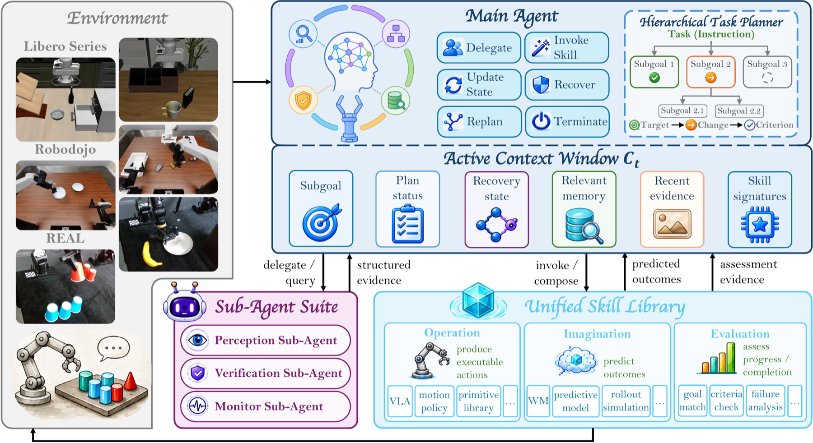
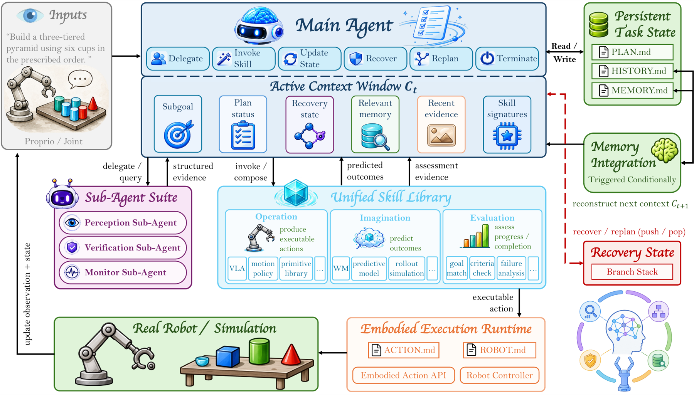
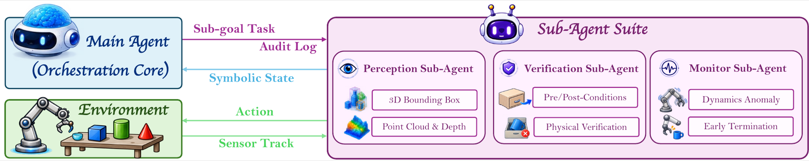
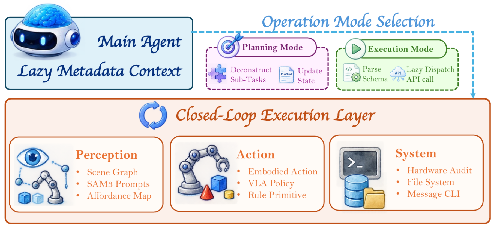
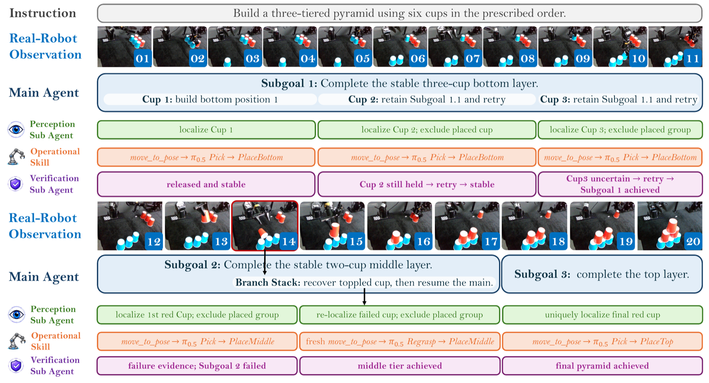
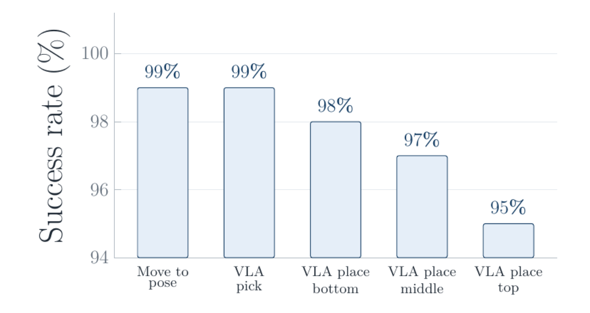
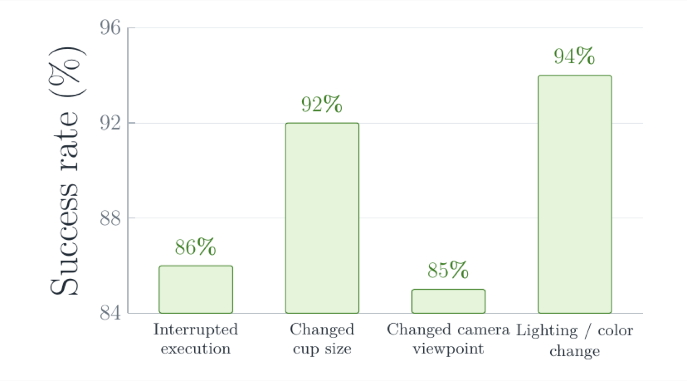
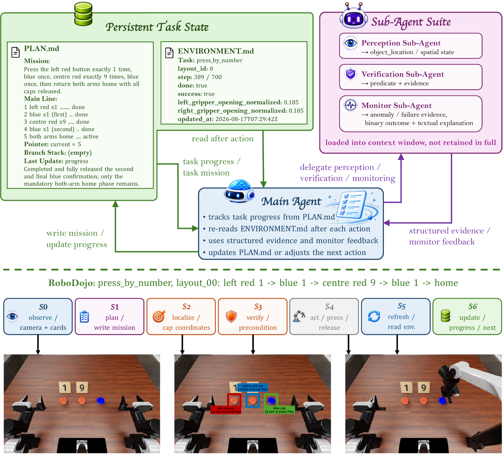
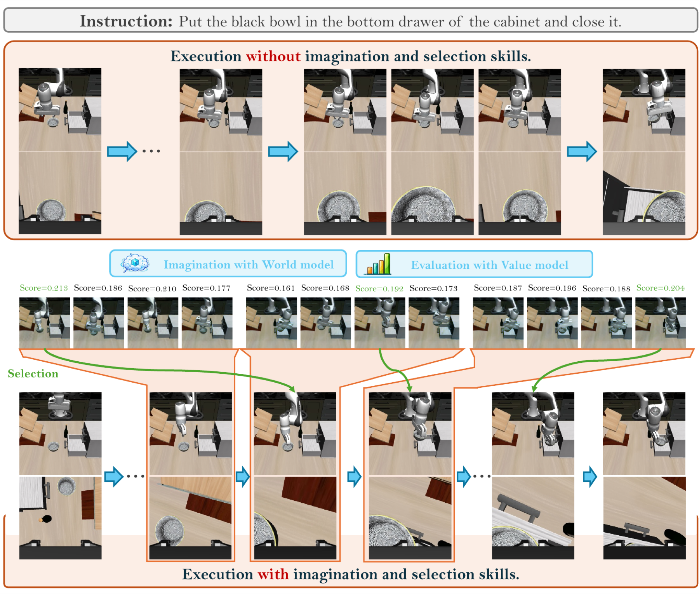
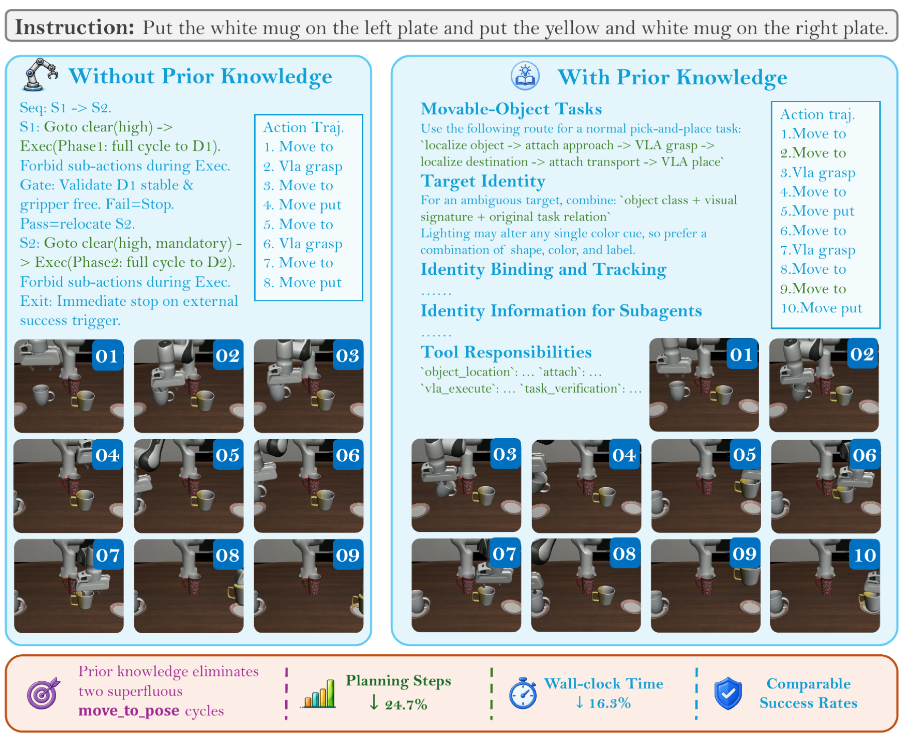

Coordinate roles
A Main Agent plans and delegates; Perception, Verification, Monitor, and Memory Sub Agents process evidence in task-scoped contexts.
Tsinghua University Nanjing University of Science and Technology Xi'an Jiaotong University Xidian University Harbin Institute of Technology Peking University Nanyang Technological University
* Equal contribution † Work done during the internship at Tsinghua University ✉ Corresponding author



A robot's effective “mind” need not reside in a single policy. It can emerge when specialized components perceive, reason, predict, act, verify, and remember within a shared orchestration process. EMERGE-Policy turns this perspective into a graph-structured agentic framework that coordinates both capability invocation and information exchange.
A Main Agent retains task-level state within an active context window, while role-specific Sub Agents process perception, execution monitoring, verification, and memory consolidation in isolated contexts and return structured, task-relevant evidence. The functional Skill interface composes heterogeneous backends as Operational, Imagination, and Evaluation Skills. Criterion-grounded verification, textual failure diagnosis, Branch Stack recovery, and token-aware external memory provide localized correction throughout execution.
Without additional fine-tuning, EMERGE-Policy improves several public benchmark results and supports long-horizon real-robot experiments. The results suggest that dividing functional subtasks among collaborating agents, while treating models as callable skills, can extend robot policies beyond isolated rollouts.
A Main Agent plans and delegates; Perception, Verification, Monitor, and Memory Sub Agents process evidence in task-scoped contexts.
VLA policies, world models, analytical controllers, and verifiers share a functional interface instead of a single implementation.
Completion criteria, structured evidence, textual diagnosis, and localized Branch Stack recovery turn execution into an adaptive process.
Given an instruction T and observation Ot, EMERGE-Policy maintains an active task context Ct, decomposes the instruction into criterion-grounded subgoals, and selects the next Sub Agent or Skill. Each subgoal is represented as ⟨Target, Change, Criterion⟩, making the intended state transition and its verification condition explicit.

Maintains compact global state, invokes capabilities, updates PLAN.md, and chooses retry, recovery, replanning, or termination.
Runs evidence-intensive work asynchronously in isolated contexts and returns concise, structured results instead of complete traces.
Separates what a capability does from which model implements it, enabling heterogeneous backends to participate in one protocol.

Every callable interface follows the schema K = ⟨Imeta, Θparam, Φpre, Ψpost⟩. The Main Agent initially sees only a compact capability signature. Full parameters, preconditions, and postconditions are retrieved only when the interface is selected, limiting context growth.

We evaluate the complete orchestration system on LIBERO, LIBERO-Plus, LIBERO-Pro, and RoboDojo, using fixed action primitives and different VLA/WAM execution backends. The headline numbers below are system-level results: they reflect the complete interaction of planning, perception, skill invocation, verification, and recovery.

| Method | Goal | Spatial | Object | Long | Average |
|---|---|---|---|---|---|
| π0.5 | 98.0 | 98.8 | 98.2 | 92.4 | 96.8 |
| Cosmos Policy | 98.2 | 98.1 | 100.0 | 97.6 | 98.5 |
| EMERGE-Policy (w/o WM) | 98.2 | 99.2 | 100.0 | 97.8 | 98.8 |
| EMERGE-Policy (w/ WM) | 99.2 | 99.0 | 100.0 | 98.6 | 99.2 |
Success rates (%) across LIBERO-Goal, Spatial, Object, and Long. WM denotes the world-model pathway.
| Method | State | Language | Layout | Background | Sensor | Camera | Light | Average |
|---|---|---|---|---|---|---|---|---|
| π0 | 61.0 | 63.5 | 76.4 | 79.0 | 80.1 | 61.0 | 85.0 | 53.6 |
| π0.5 | 75.4 | 85.6 | 85.7 | 94.6 | 89.7 | 75.4 | 96.9 | 85.7 |
| UniVLA | 46.2 | 77.6 | 31.9 | 81.0 | 21.2 | 1.8 | 69.0 | 42.9 |
| OpenVLA | 3.5 | 23.0 | 28.5 | 34.8 | 15.2 | 0.8 | 8.1 | 15.6 |
| WorldVLA | 27.9 | 41.6 | 38.0 | 17.1 | 10.9 | 0.1 | 43.7 | 25.0 |
| RIPT-VLA | 31.2 | 77.6 | 74.2 | 91.6 | 73.5 | 55.2 | 88.4 | 68.4 |
| DreamVLA | 17.6 | 67.0 | 43.5 | 71.5 | 53.6 | 26.2 | 77.5 | 48.9 |
| ABot-M0 | 67.9 | 86.4 | 82.6 | 91.6 | 86.4 | 60.4 | 96.2 | 80.5 |
| Being-H0.7 | — | — | — | — | — | — | — | 82.1 |
| OpenVLA-OFT | 21.7 | 81.0 | 68.7 | 91.0 | 78.6 | 55.6 | 92.7 | 67.9 |
| X-VLA | 89.7 | 75.7 | 71.8 | 96.0 | 62.7 | 23.4 | 88.2 | 71.4 |
| Cosmos-Policy | 63.3 | 81.7 | 82.2 | 88.9 | 92.7 | 75.8 | 96.5 | 82.2 |
| Fast-WAM | 44.5 | 68.9 | 60.7 | 53.7 | 37.7 | 16.4 | 78.2 | 51.5 |
| LingBot-VA | 83.0 | 86.4 | 76.2 | 53.1 | 64.4 | 40.9 | 82.3 | 69.5 |
| RoboHarness | 90.4 | 97.0 | 86.8 | 97.1 | 90.3 | 87.6 | 97.4 | 93.2 |
| EMERGE-Policy | ||||||||
| EMERGE-Policy (w/o WM) | 87.6 (+12.2) | 87.5 (+1.9) | 91.6 (+5.9) | 89.7 (-4.9) | 84.2 (-5.5) | 84.9 (+9.5) | 92.4 (-4.5) | 88.3 (+2.6) |
| EMERGE-Policy (w/ WM) | 95.0 (+31.7) | 98.0 (+16.3) | 89.0 (+6.8) | 97.0 (+8.1) | 94.0 (+1.3) | 84.0 (+8.2) | 100.0 (+3.5) | 93.9 (+11.7) |
LIBERO-Plus robustness under seven perturbation types. Success rates (%) are reported for each perturbation, with the mean in Average. Colored values show the absolute change from the corresponding execution backend.
We study a long-horizon “Multi-layered Cup Stacking” task in which the robot identifies and picks up six cups, then constructs a three-tier pyramid with three, two, and one cups. The task tests semantic grounding, repeated grasp-and-place actions, concurrent agent coordination, memory of progress, and recovery. Across 100 real-robot experiments, the closed-loop system maintained high completion rates under several interference settings.



EMERGE-Policy externalizes long-horizon state instead of relying on an unbounded neural memory. PLAN.md stores the subgoal decomposition and progress, ENVIRONMENT.md records the latest physical state, and structured Sub-Agent evidence provides concise short-term facts. An asynchronous visual monitor compares outcomes with the active criterion and feeds corrections back to the Main Agent. When a local failure is detected, a recovery objective is pushed onto the Branch Stack before global replanning is considered.

The Imagination Skill generates candidate action chunks and predicts their future observations. The Evaluation Skill scores those predictions against the active completion criterion, and the Main Agent greedily dispatches the highest-scoring candidate. In the reported implementation, the system evaluates M = 5 candidates with horizon H = 16; this adds approximately 1.2 seconds per selection step while reducing risky physical trial-and-error.

Planning priors expose the coupling between high-level subgoals and the native capabilities of the
execution skills. In the cup-stacking study, this removes redundant move_to_pose cycles,
reducing planning steps per subgoal by 24.7% and wall-clock time per episode by
16.3%, while maintaining comparable success rates.

EMERGE-Policy is not another low-level control policy. It provides the structure through which perception, prediction, execution, verification, recovery, and memory become coherent system-level behavior. Its Main Agent maintains compact task state, Sub Agents process dense evidence in isolated contexts, and Operational, Imagination, and Evaluation Skills give heterogeneous models a shared role-based interface.
The reported gains are system-level results. Future work will make the harness evaluation protocol more reproducible, quantify accuracy–latency–token trade-offs, and study how the same orchestration graph transfers across planners, policies, tasks, and embodiments while separating safe within-episode adaptation from persistent cross-episode learning.
@article{fang2026emergepolicy,
title = {EMERGE-Policy: A Robot Mind Emerges Beyond a Single Policy},
author = {Fang, Zhirui and Yu, Qingchi and Chen, Ziyang and Li, Longfei and Ma, Haoran and Zhou, Keru and Xu, Xinrun and Va, Samith and Hu, Yuxuan and Song, Peixuan and Du, Qiang and Qian, Bin and Deng, Yongkang and Li, Xin and Wang, Yezhen and Li, Zhe and Luo, Hao and Li, Shuyan and Wang, Ziwei and Deng, Weijian and Li, Xiu},
journal = {arXiv preprint arXiv:2608.29896},
year = {2026}
}